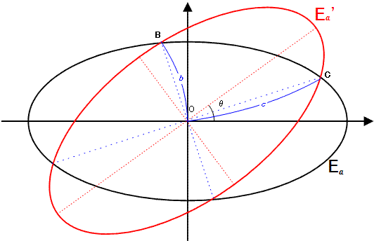

Project Euler 404
Project Euler 404
题目
Crisscross Ellipses
\(E_a\) is an ellipse with an equation of the form \(x^2 + 4y^2 = 4a^2\).
\(E_a'\) is the rotated image of \(E_a\) by \(θ\) degrees counterclockwise around the origin \(O(0, 0)\) for \(0° < θ < 90°\).

b is the distance to the origin of the two intersection points closest to the origin and c is the distance of the two other intersection points.
We call an ordered triplet \((a, b, c)\) a canonical ellipsoidal triplet if \(a, b\) and \(c\) are positive integers.
For example, \((209, 247, 286)\) is a canonical ellipsoidal triplet.
Let \(C(N)\) be the number of distinct canonical ellipsoidal triplets \((a, b, c)\) for \(a \le N\).
It can be verified that \(C(10^3) = 7, C(10^4) = 106\) and \(C(10^6) = 11845\).
Find \(C(10^{17})\).
解决方案
由于 \(E_a\) 与 \(E_a'\) 关于原点中心对称，且两条椭圆的长短轴互相旋转而来，可以证明四个交点关于两条角平分线成对对称；进一步可推出：距离为 \(b\) 的交点方向与距离为 \(c\) 的交点方向互相垂直（且存在一个相似缩放关系）。
取距离为 \(c\) 的交点之一为 \(P=(x,y)\)，则\(x^2+y^2=c^2.\)
设另外一个距离为 \(b\) 的交点为 \(Q\)，由上述对称/相似结构可令\(Q=(-ty,tx), t=\dfrac bc.\)于是 \(Q\) 到原点的距离为\((-ty)^2+(tx)^2=t^2(x^2+y^2)=t^2c^2=b^2,\)与定义一致。
因为 \(P,Q\) 同时位于椭圆 \(E_a\) 上，所以分别满足\(x^2+4y^2=4a^2,\)以及把 \(Q\) 代入椭圆方程得到\((-ty)^2+4(tx)^2=t^2y^2+4t^2x^2=4a^2.\)令 \(X=x^2,Y=y^2\)，得到线性方程组
\[ \begin{cases} X+4Y=4a^2,\\ 4t^2X+t^2Y=4a^2. \end{cases} \]
解得\(X+Y=c^2=\dfrac{4a^2}{5}\left(1+\dfrac1{t^2}\right).\)代入 \(t=b/c\) 得到最关键的整系数关系：\(c^2=\dfrac{4a^2}{5}\left(1+\dfrac{c^2}{b^2}\right)\Longrightarrow 5b^2c^2=4a^2(b^2+c^2).\)
因此问题等价于计数满足
\[ 4a^2(b^2+c^2)=5b^2c^2 \]
的正整数三元组 \((a,b,c)\)，再结合题目中的 \(0^\circ<\theta<90^\circ\) 可推出交点落在合理象限，从而有\(a<b<c<2a\)（尤其 \(b,c\) 都严格在 \((a,2a)\) 之间）。
将上式两边同除以 \(b^2c^2\)：\(4a^2\left(\dfrac1{b^2}+\dfrac1{c^2}\right)=5.\)定义\(p=\dfrac{2a}{c}, q=\dfrac{2a}{b},\)则\(p^2+q^2=5.\)又因为 \(b<c\)，所以\(q=\dfrac{2a}{b}>\dfrac{2a}{c}=p,\)并且由 \(a<b<c<2a\) 可得\(1<p<q<2.\)
因此我们需要枚举所有满足\(p^2+q^2=5, 1<p<q<2\)的有理数对 \((p,q)\)，并将它们转回整数解 \((a,b,c)\)。
圆\(p^2+q^2=5\)上显然存在有理点 \((1,2)\)。对任意有理斜率 \(t\)，考虑过该点的直线\(q-2=t(p-1).\)它与圆的另一个交点也是有理点。代入联立可解得另一交点为\(p=\dfrac{t^2-4t-1}{t^2+1}, q=\dfrac{2(1-t-t^2)}{t^2+1}.\)
为匹配区间 \(1<p<q<2\)，取\(t=-\dfrac{n}{m},\)其中 \(m,n\) 为正整数、且 \(\gcd(m,n)=1\)。代入并同乘分母得到整系数形式：
\[ p=\frac{n^2+4mn-m^2}{m^2+n^2},q=\frac{2(m^2+mn-n^2)}{m^2+n^2}. \]
进一步分析不等式 \(1<p<q<2\)，可化为对 \((m,n)\) 的简单范围约束： \(n<m<2n.\)因此所有候选有理对都可由满足\(\gcd(m,n)=1, n<m<2n\)的整数对 \((n,m)\) 构造出来。
由定义\(p=\dfrac{2a}{c}, q=\dfrac{2a}{b},\)将 \(p,q\) 写成最简分数\(p=\dfrac{p_1}{p_2}, q=\dfrac{q_1}{q_2}, \gcd(p_1,p_2)=\gcd(q_1,q_2)=1,\)则\(\dfrac{2a}{c}=\dfrac{p_1}{p_2}\Longrightarrow p_1\mid 2a, c=\dfrac{2ap_2}{p_1},\)同理 \(q_1\mid 2a\)。
因此使 \(b,c\) 同时为整数的最小 \(2a\) 必须是\(2a=\mathrm{lcm}(p_1,q_1,2).\)
对本题给定的参数化形式，上述最小公倍数可以被化成一个非常简洁的显式表达（这是效率的关键）。我们接下来讲解一下怎么计算\(L=L(n,m)\)。令\(u=n^2+4mn-m^2, v=m^2+mn-n^2.\)在只保留“规范顺序”且避免重复计数的条件下，可取额外筛选\(5\nmid (m-2n)\)来保证每个 canonical triplet 只出现一次。此时可以证明：基本量级为 \(2u\cdot v\)；若 \(m,n\) 同奇偶，则需整体再除以 \(4\)；最终还要保证 \(2a\) 为偶数。
因此我们可直接计算\(L=2uv,\)若 \((m+n)\) 为偶数，则\(L\leftarrow \dfrac{L}{4}\)；若 \(L\) 为奇数，则\(L\leftarrow 2L,\)并将其作为该 \((n,m)\) 对应的最小 \(2a\)。对给定的 \(N\)，若该族的最小 \(2a=L\)，则其所有倍数解满足\(2a=kL\le 2N \Longleftrightarrow k\le \left\lfloor \dfrac{2N}{L}\right\rfloor.\)
因此总计数为
\[ C(N)=\sum_{(n,m)}\left\lfloor\frac{2N}{L(n,m)}\right\rfloor, \]
其中求和遍历所有满足\(\gcd(n,m)=1, n<m<2n, 5\nmid (m-2n)\)且对应 \(L(n,m)\le 2N\) 的整数对。
对固定 \(n\)，当 \(m\) 从 \(n+1\) 增大时，\(u\cdot v=(n^2+4mn-m^2)(m^2+mn-n^2)\)会快速增大（在本范围内可视作单调增长），因此一旦某个 \(m\) 已使得最小 \(2a\) 超过 \(2N\)，后续更大的 \(m\) 都可直接终止内层循环。
代码
1 |
|